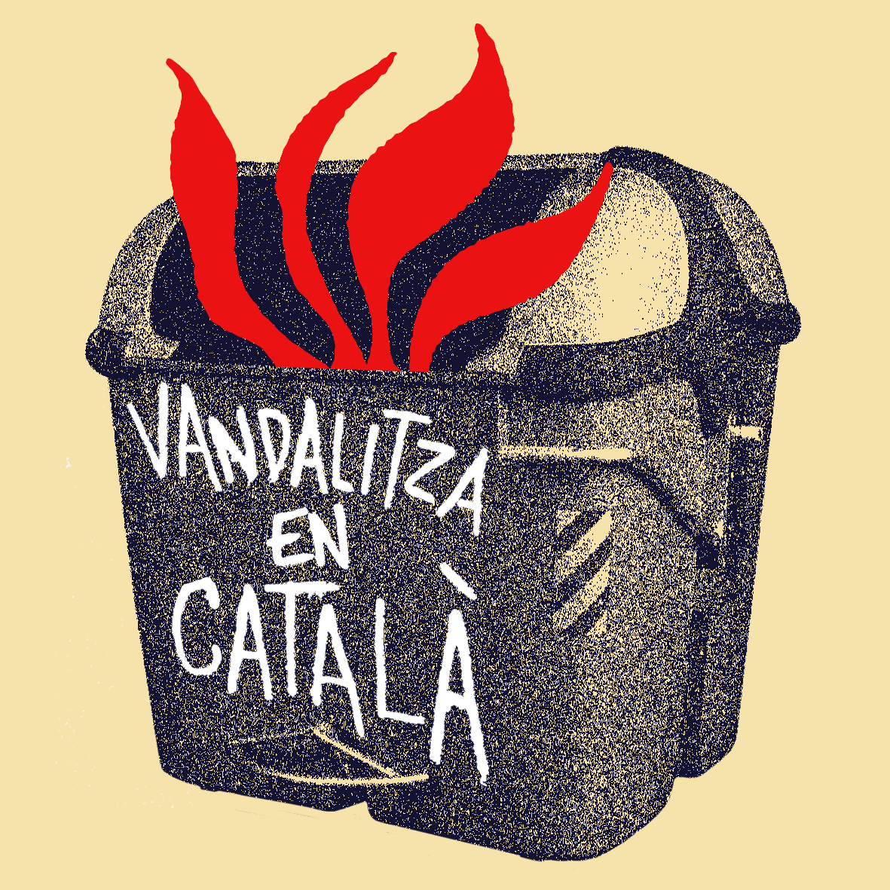

Si tens majoria de respostes B, la teva entitat és...
Siguis d'Arran o del Grup d'Habitatge, el teu lloc a les Corts és a l'Ateneu. Utilitzes el DNI per obrir les birres i tens un arsenal de samarretes amb logos xulissims i nacionalistes (si tu no creus en els Països Catalans no hi creu ningú). Segur que els teus origens eren els concerts d'Auxili de l'Acampada Jove i que eres del consell d'estudiants. Has fet més arrencacebes que la Rita, i això de taparte de negre i pintar alguna paret és per tu un dimarts qualsevol.
